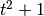
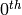
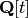
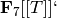
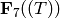
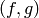
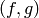

Navigation
- index
- next |
- previous |
- Sage Tutorial v4.3 »
- 导览 »

这一节我们展示在Sage中如何创建和使用多项式。
有三种方法创建多项式环。
sage: R = PolynomialRing(QQ, 't')
sage: R
Univariate Polynomial Ring in t over Rational Field
建立一个多项式环并告诉Sage在输出到屏幕时， 使用字符 ‘t’ 作为不确定的量。但是这种方法没有定义符号 t 在Sage中如何使用，你不能用它输入一个属于 R 的多项式(如 )。
另一种方法是
sage: S = QQ['t']
sage: S == R
True
这里的 t 有同样的问题。
第三种非常方便的方法是
sage: R.<t> = PolynomialRing(QQ)
或
sage: R.<t> = QQ['t']
或者，甚至是
sage: R.<t> = QQ[]
这样变量 t 定义为多项式环的不定量，你可以很容易构造 R 中的元素，象下面一样。（注意，第三种方式与Magma中的构造方法类似， 但是在Magma中，可以用这种方法定义的对象有很多。）
sage: poly = (t+1) * (t+2); poly
t^2 + 3*t + 2
sage: poly in R
True
不管你用哪种方法定义一个多项式环， 你都可以将不定量恢复为0阶生成器( generator)。
sage: R = PolynomialRing(QQ, 't')
sage: t = R.0
sage: t in R
True
复系数多项式的构造是类似的。复数可以视为由实数通过符号 i 生成的。 所以可以如下构造：
sage: CC
Complex Field with 53 bits of precision
sage: CC.0 # 0th generator of CC
1.00000000000000*I
在创建多项式环时，可以得到环及其生成元，或者只是生成元：
sage: R, t = QQ['t'].objgen()
sage: t = QQ['t'].gen()
sage: R, t = objgen(QQ['t'])
sage: t = gen(QQ['t'])
最后，可以在  上进行一些运算。
sage: R, t = QQ['t'].objgen()
sage: f = 2*t^7 + 3*t^2 - 15/19
sage: f^2
4*t^14 + 12*t^9 - 60/19*t^7 + 9*t^4 - 90/19*t^2 + 225/361
sage: cyclo = R.cyclotomic_polynomial(7); cyclo
t^6 + t^5 + t^4 + t^3 + t^2 + t + 1
sage: g = 7 * cyclo * t^5 * (t^5 + 10*t + 2)
sage: g
7*t^16 + 7*t^15 + 7*t^14 + 7*t^13 + 77*t^12 + 91*t^11 + 91*t^10 + 84*t^9
+ 84*t^8 + 84*t^7 + 84*t^6 + 14*t^5
sage: F = factor(g); F
(7) * t^5 * (t^5 + 10*t + 2) * (t^6 + t^5 + t^4 + t^3 + t^2 + t + 1)
sage: F.unit()
7
sage: list(F)
[(t, 5), (t^5 + 10*t + 2, 1), (t^6 + t^5 + t^4 + t^3 + t^2 + t + 1, 1)]
注意到因式分解时正确的考虑并记录了单位(unit)。
如果你要用某些函数，比如 R.cyclotomic_polynomial 做更多的研究，除了引用Sage，还应该尝试找出具体是什么组件计算分圆多项式， 并引用它们。这里，如果你输入 R.cyclotomic_polynomial?? 来查看源代码的话，你会很快看到一行 f = pari.polcyclo(n), 这说明PARI被用于求分圆多项式。应该在你的工作中引用PARI。
两个多项式相除将产生一个分式域中的元素（由Sage自动创建）。
sage: x = QQ['x'].0
sage: f = x^3 + 1; g = x^2 - 17
sage: h = f/g; h
(x^3 + 1)/(x^2 - 17)
sage: h.parent()
Fraction Field of Univariate Polynomial Ring in x over Rational Field
使用Laurent级数，可以在分式域 QQ[x] 上计算级数的展开：
sage: R.<x> = LaurentSeriesRing(QQ); R
Laurent Series Ring in x over Rational Field
sage: 1/(1-x) + O(x^10)
1 + x + x^2 + x^3 + x^4 + x^5 + x^6 + x^7 + x^8 + x^9 + O(x^10)
如果我们命名的变量不同，得到不同的一元多项式环。
sage: R.<x> = PolynomialRing(QQ)
sage: S.<y> = PolynomialRing(QQ)
sage: x == y
False
sage: R == S
False
sage: R(y)
x
sage: R(y^2 - 17)
x^2 - 17
环由变量确定。注意，用 x 再建一个环，并不能得到一个新的不同的环。
sage: R = PolynomialRing(QQ, "x")
sage: T = PolynomialRing(QQ, "x")
sage: R == T
True
sage: R is T
True
sage: R.0 == T.0
True
Sage还支持任何基本环上的幂级数和Laurent级数环。下面的例子中， 我们新建  的一个元素， 并使用除法新建  的一个元素。
sage: R.<T> = PowerSeriesRing(GF(7)); R
Power Series Ring in T over Finite Field of size 7
sage: f = T + 3*T^2 + T^3 + O(T^4)
sage: f^3
T^3 + 2*T^4 + 2*T^5 + O(T^6)
sage: 1/f
T^-1 + 4 + T + O(T^2)
sage: parent(1/f)
Laurent Series Ring in T over Finite Field of size 7
可以用双中括号的简单形式新建幂级数环：
sage: GF(7)[['T']]
Power Series Ring in T over Finite Field of size 7
要使用多元多项式，先要声明多项式环和变量。
sage: R = PolynomialRing(GF(5),3,"z") # here, 3 = number of variables
sage: R
Multivariate Polynomial Ring in z0, z1, z2 over Finite Field of size 5
跟定义一元多项式一样，有多种方法：
sage: GF(5)['z0, z1, z2']
Multivariate Polynomial Ring in z0, z1, z2 over Finite Field of size 5
sage: R.<z0,z1,z2> = GF(5)[]; R
Multivariate Polynomial Ring in z0, z1, z2 over Finite Field of size 5
如果你希望变量的名字是单个字母，可以用下面的简短形式：
sage: PolynomialRing(GF(5), 3, 'xyz')
Multivariate Polynomial Ring in x, y, z over Finite Field of size 5
下面我们做一些运算。
sage: z = GF(5)['z0, z1, z2'].gens()
sage: z
(z0, z1, z2)
sage: (z[0]+z[1]+z[2])^2
z0^2 + 2*z0*z1 + z1^2 + 2*z0*z2 + 2*z1*z2 + z2^2
你也可以用更多的数学记号来构造多项式环。
sage: R = GF(5)['x,y,z']
sage: x,y,z = R.gens()
sage: QQ['x']
Univariate Polynomial Ring in x over Rational Field
sage: QQ['x,y'].gens()
(x, y)
sage: QQ['x'].objgens()
(Univariate Polynomial Ring in x over Rational Field, (x,))
Sage中，多元多项式是用Python的字典(dictionaries) 以及多项式的“分配形式”(distributive representation)实现的。 Sage用了很多Singular [Si], 如计算最大公因式和理想的Gröbner基。
sage: R, (x, y) = PolynomialRing(RationalField(), 2, 'xy').objgens()
sage: f = (x^3 + 2*y^2*x)^2
sage: g = x^2*y^2
sage: f.gcd(g)
x^2
下面我们新建一个由  和
和  生成的理想 ,
简单把 (f,g) 和 R 乘在一起就行（也可以用
ideal([f,g]) 或 ideal(f,g) )。
生成的理想 ,
简单把 (f,g) 和 R 乘在一起就行（也可以用
ideal([f,g]) 或 ideal(f,g) )。
sage: I = (f, g)*R; I
Ideal (x^6 + 4*x^4*y^2 + 4*x^2*y^4, x^2*y^2) of Multivariate Polynomial
Ring in x, y over Rational Field
sage: B = I.groebner_basis(); B
[x^6, x^2*y^2]
sage: x^2 in I
False
顺便说一下，上面的Gröbner基不是一个列表，而是一个固定序列。 这意味着它有范围(universe)，有根源(parent)，并且不能修改 （不能修改是好事，因为如果改动基的话，与Gröbner基相关的程序都可能出问题）。
sage: B.parent()
Category of sequences in Multivariate Polynomial Ring in x, y over Rational
Field
sage: B.universe()
Multivariate Polynomial Ring in x, y over Rational Field
sage: B[1] = x
...
ValueError: object is immutable; please change a copy instead.
一些（并不多）交换代数的函数在Sage中也是可用的，是由Singular实现的。
比如，我们可以计算  的基本分解和相伴素理想(associated primes):
的基本分解和相伴素理想(associated primes):
sage: I.primary_decomposition()
[Ideal (x^2) of Multivariate Polynomial Ring in x, y over Rational Field,
Ideal (y^2, x^6) of Multivariate Polynomial Ring in x, y over Rational Field]
sage: I.associated_primes()
[Ideal (x) of Multivariate Polynomial Ring in x, y over Rational Field,
Ideal (y, x) of Multivariate Polynomial Ring in x, y over Rational Field]
| [Si] | G.-M. Greuel, G. Pfister, and H. Schönemann. Singular 3.0. A Computer Algebra System for Polynomial Computations. Center for Computer Algebra, University of Kaiserslautern (2005). http://www.singular.uni-kl.de . |